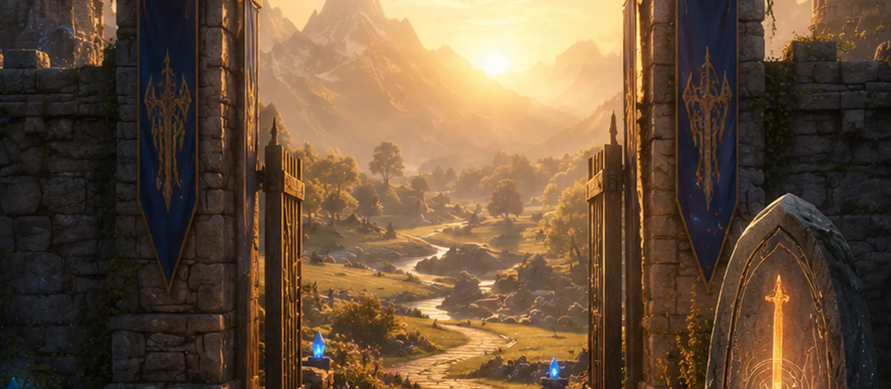

First · the threshold
Rookguard
The stone antechamber every newcomer crosses before the world will admit them. Quiet, warm, and short. You learn to move, to speak, and to answer the guardian. Beside the corridor stand two old stones — the Runestone Table and the Legend Stone.